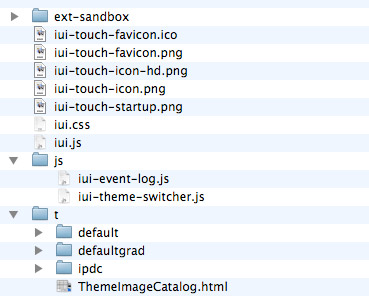
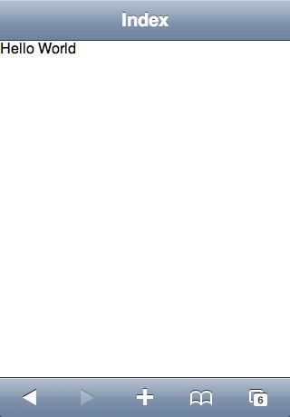
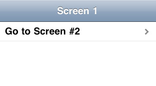
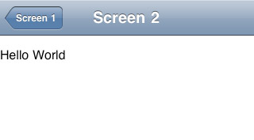
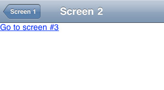

Getting started
Thank you for your interest in iUI. This guide is meant for anybody trying out the iUI framework for the first time. It will walk you step by step through the basics of working with iUI and help you create your first app. Before we get started, it is important to point out that no prior knowledge of any programming language is required.
However, this guide currently assumes you are familiar with the basics of HTML coding. As we expand the iUI documentation, more code basics will be included. Until then, with the use of a visual HTML editor (also know as WYSIWYG editor), you should be able to create most of your app, if not all.
In fact, iUI’s purpose is to minimize the need for manual code entry and provide the user with all the basics so they can concentrate on what matters most - making a great idea turn into a great app!
1. Downloading and Installing iUI
There is no installation for the iUI framework. The framework consists of a combination of html, css, js and image files, organized in regular folders and zipped for your convenience. All you will need to do is download that archive and unpack/extract it in the location you want.
Once downloaded, "iui" folder tree should look like the following screen: (in /web-app/iui)

Once done, here is what your HTML documents should have in their <head>. Of course you can add more than that but those are needed.
<!DOCTYPE html>
<html>
<head>
<title>Page Title</title>
<meta name="viewport" content="width=device-width; initial-scale=1.0; maximum-scale=1.0; user-scalable=0;"/>
<link rel="stylesheet" href="iui/iui.css" type="text/css" />
<link rel="stylesheet" href="iui/t/default/default-theme.css" type="text/css"/>
<script type="application/x-javascript" src="iui/iui.js"></script>
</head>
Line 1 is needed to scale the browser viewport to the content width, and disable pinch/zoom
Line 2 and 3 are the CSS styles. First one is iUI defining all globals, second is iOS default theme.
Line 4 contains the link to the javascript file, which is responsible for the native looking transitions and governs the behavior of links, buttons, etc.
Note that iUI Javascript code doesn't interact with other major frameworks. You can mix it with some JQuery, MooTools, ...
Ok that’s pretty much it, let’s make our first Hello World :)
2. First screen using iUI
Let's start simple: one screen, no link. The main goal here is to show you basic elements that you will see on every single screen that uses iUI.
The Toolbar and Navigation
The main difference between iUI and other mobile web frameworks is the way the toolbar is managed. The toolbar sits at the top of your app’s screen and serves as the main menu for navigation and content titles.
Where other frameworks require you to redefine a toolbar for every individual page/screen, iUI keeps the toolbar “static” and changes its title automatically (based on the value of the “title” attribute of the active screen).
Here is an example of a single screen showing a toolbar + the text "Hello World":
<!DOCTYPE html>
<html>
<head>
<meta http-equiv="Content-Type" content="text/html; charset=utf-8" />
<meta name="viewport" content="width=device-width; initial-scale=1.0; maximum-scale=1.0; user-scalable=0;"/>
<link rel="stylesheet" href="iui/iui.css" type="text/css" />
<link rel="stylesheet" href="iui/t/default/default-theme.css" type="text/css"/>
<script type="application/x-javascript" src="iui/iui.js"></script>
</head>
<body>
<div class="toolbar">
<h1 id="pageTitle"></h1>
<a id="backButton" class="button" href="#"></a>
</div>
<div id="index" title="Index" selected="true">
Hello World
</div>
</body>
</html>
see live demo

You may have noticed there is a piece of code in there for a "backButton"but no back button appears in this page. Just like the toolbar itself, iUI takes care of the back button and shows it only when needed. If there is no previous screen in your navigation history, the back button is hidden. It shows up automatiquely and is titled using previous screen title value.
Pages, screens, and app content
The concept of a page in website is usually very clear - every new page is literally a new physical file that gets loaded. iUI operates on a slightly different principle. To make load times and transitions faster over a basic mobile phone network, iUI puts all the content it can in one physical page. That page (in our case the index.html file) contains all the screens that the user can navigate to. This is why, throughout this guide, we will refer to separate “pages” within your app as separate “screens” - literally what the user sees on their screen at the moment. Of course, you can have external content and additional pages and most apps do. In this case, iUI will load this external page content inside the current page, and then perform a sliding transition to it.

Each individual page can be any HTML element: <div>, <ul>, <form>, ... Each element should come with an 'id' and a 'title' attribute. 'id' is used as the screen reference and link, and should be unique. This is how a new screen is “requested” once a button or a link is clicked. 'title' is used as a screen title, which shows up in the toolbar and further as the back button label.
On load, iUI hides all screens except the one with the attribute "selected" set to "true". This pretty much tells iUI that this screen is your main screen and should appear first. (if no body children elements have that attribute, only the toolbar will be displayed). Here is an example of a
<div id="index" title="Index" selected="true">
Hello World
</div>
<ul id="contacts" title="My Contacts">
<li>List item</li>
</ul>
<form id="" title="Index" name="formname" action="" method="GET">
<input type="text" name="inputname">
<input type="submit">
</form>
3. Multiple screens navigation
As we saw, in an iUI document, you have a toolbar div, and all the rest are pages/screens. Let's make a sliding link between two screens:
<body>
<div class="toolbar">
<h1 id="pageTitle"></h1>
<a id="backButton" class="button" href="#"></a>
</div>
<ul id="screen1" title="Screen 1" selected="true">
<li><a href="#screen2">Go to Screen #2</a></li>
</ul>
<div id="screen2" title="Screen 2">
Hello World
</div>
</body>
see live demo


Of course, you're not limited to two screens, neither to use a list element for links. Here is a second example with 3 screens.
<body>
<div class="toolbar">
<h1 id="pageTitle"></h1>
<a id="backButton" class="button" href="#"></a>
</div>
<ul id="screen1" title="Screen 1" selected="true">
<li><a href="#screen2">Go to Screen #2</a></li>
</ul>
<div id="screen2" title="Screen 2">
<a href="#screen3">Go to screen #3</a>
</div>
<div id="screen3" title="Screen 3" class="panel">
Hello World
</div>
</body>
see live demo


If you want to learn more about all predefined graphical styles & elements in iUI, please go to our Advanced styling & themes documentation page.